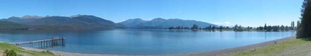

NEW ZEALAND


REJSEPLAN
15.1 - 15.3 2008
Med Camper rundt i New Zealand

Vi lander om natten i Cristchurch og overnatter på et hotel tæt ved lufthavnen. Dagen efter skal vi hente vores hjem for de næste 2 måneder: en Kea Camper. Det er et kæmpe monstrum af en bil, som vi skal lære at køre rundt på smalle bjergveje... Vi har selvfølgelig lejet nogle lækre campist møbler og tegnet den største forsikring.
Vi regner med at blive et par dage i Christchurch for at proviantere til vores tur til Fjordlandet.
Vores rute går ind i landet langs alperne mod Dunedin, hvor vi skal se på Albatrosser. Dunedin er NZ´s svar på en skotsk universitetsby. Vi ved ikke hvor lange træk, vi kan klare i bilen så første uge, bliver en test uge. Hvis tiden tillader tager vi også et smut til Invercargill, for at mærke lidt kølig luft fra Sydpolen.
D. 29. Januar skal vi være ved Lake Manapouri i Fjordlandet ( www.fiordland.co.nz ). Se iøvrigt vores separate side om turen på Doubtful Sound.
Efter turen i fjorden tager vi nok til Te Anau, hvor vi skal på nogle dagsvandreture hver for sig. Da vi ikke har mulighed for at tage lange trek med børnene, bliver det smagsprøver på Routeburn og Milford track.
Efter Te Anau kører vi måske den smukke vej til Milford Sound og herefter til Queenstown, alt afhængig af vejret.
I Queenstown skal vi afprøve nogle af de ”spændende” aktiviteter, såsom rafting, jetboating, faldskærmsudspring, zorbing og bungyjump. Heldigvis er der jo en, som skal passe børnene, og som har prøvet bungy jump (og det er ikke Tim)!
Vi skal også rigtig lege turister på en guidet Lord of the Rings tur i 4 hjulstrækker. Vi skal køre på vejen til Mordor, se Isengard og elvernes skov.
Fra Queenstown kører vi mod Wanaka, hvor vi skal se noget af Mt. Aspiring Nationalpark. Vi flyver ind i området og vandrer 3 timer gennem dalen Siberia Valley for at slutte turen med jetbådstur. Her er også en Lord of the Ring tur Midgård
Så går det mod vestkysten og de to gletsjere Fox og Franz Josef. Vi skal nyde det aparte syn af is midt i regnskoven, og forhåbentlig tillader vejret en flyvetur og/eller en vandretur på gletsjerne.
Efter isen kører vi mod Arthur´s Pass, hvor vi skal overnatte på Wilderness Lodge, en arbejdende farm med masser af familieaktiviteter. Måske kan Viola og mor få en smuk ridetur, mens far og Stella klipper får.
Ved Hanmersprings, en alpin by, hvor der er skiløb om vinteren, skal vi nyde de varme kilder, der er mellem 31 og 40 grader varme.
Vi forsætter til østkysten, hvor vi skal tilbringe nogle dage i Kaikoura. Her skal vi efter gode råd fra vores venner: Natascha og Peter, på helikopter whale watching, snorkle med sæler og svømme med delfiner. Jeg har også fundet en dyrepark, hvor børnene kan hygge med en masse dyreunger og her findes også en lama trekking tur, som Camilla har set sig lidt lun på ......
Så er det tid til sol og strand – vi kører mod Nelson og Abel Tasman National Park. Nelson er en rigtig hyggelig kunstnerkoloni med masser af liv og gode spisesteder. Vi tager til Abel Tasman National Park hvor vi skal vandre, sejle og nyde den smukke natur og det milde vejr.
Vi sejler fra Blenheim til Wellington d. 20. Februar. I Welington skal vi på museumsbesøg, men planen er at vi hurtigt kører videre mod Taupo & Tongariro - et område på 1400 km2, der er vulkansk med kratersøer, vandfald og goldt ørkenlandskab. Der findes 3 vulkaner i området, den højeste: Mt. Ruapehu er 2.797 meter høj, og var sidst i udbrud i 1995.
Vi skal selvfølgelig ud og vandre på vulkaner på en af verdens smukkeste dagsvandreture Tongariro Crossing. Turen består af vandring på ca. 20 km henover vulkansk højderyg, forbi kratersøer og kildevæld. Da området er et rigtigt godt fiskeområde, kan det være at vi vil forsøge at hive et par regnbue ørreder i land, som vi tilbereder over bålet...
Rotorua – stanken af rådne æg.....
Rotorua er et område, der bobler af termisk aktivitet. Her er varme kilder, gejsere, boblende mudderpøle og ikke mindst er Rotorua, det centrale samlingssted for Maorier. Vi håber at kunne lære lidt mere om maoriernes kultur mens vi er i området. Det gælder om at holde godt fast i nysgerrige børn, da undergrunden er meget varm. Kun 5 cm under overfladen kan temperaturen være 90 grader varm.
Så skal vi til Coromandel og hygge i den smukke natur. Vi skal se de kæmpe fredede Kauritræer, vi skal besøge Hot water beach, inden vi tager videre til Bay of Islands, hvor vi skal svømme med delfiner, besøge det fantastiske dykkersted Poor Knights Island (kåret som et af verdens bedste dykkersteder af Costeau) og besøge Waitangi Treaty House, hvor man i 1840 underskrev den traktat, der indlemmede NZ i det britiske imperium.
Vores sidste stop i NZ er Auckland, hvor vi også skal aflevere camperen inden turen til Cook Island. Vi håber, at kunne se lidt nærmere på det, der indtil for få år siden var Americas Cups hovedsæde – inden tåbelige europæere begyndte at blande sig i sejladsen.